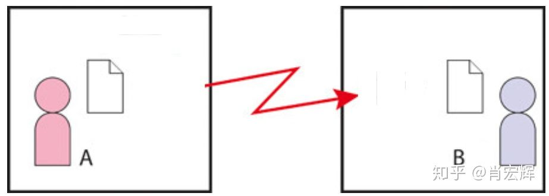
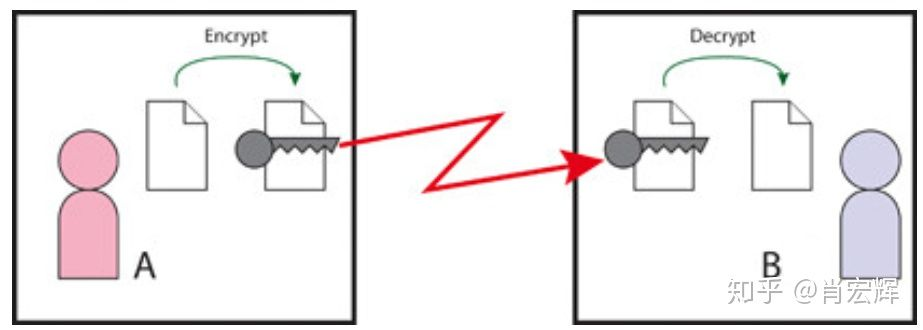
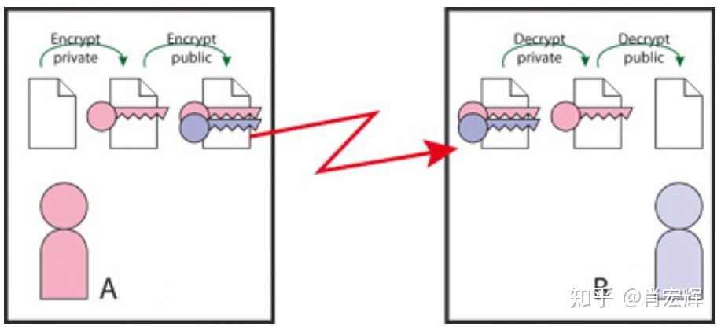
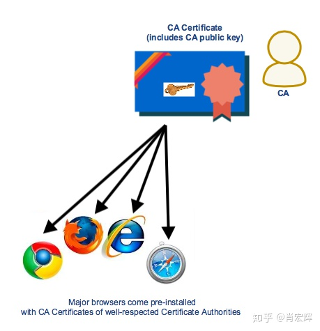

本文转载自：浅谈SSL/TLS工作原理
为了保证网络通信的安全性，需要对网络上传递的数据进行加密。现在主流的加密方法就是SSL (Secure Socket Layer)，TLS (Transport Layer Security)。后者比前者要新一些，不过在很多场合还是用SSL指代SSL和TLS。
先来回顾一下网络通信加密的发展过程，假设A和B之间要网络通信。
远古时代
远古时代自然是民风淳朴，路不拾遗，夜不闭户。A要发数据给B，根本不用担心窃听和篡改，直接发就好了。

上古时代
随着时代的发展，渐渐的有了一类人—C。C不仅会监听A和B之间的网络数据，还会拦截A和B之间的数据，伪造之后再发给A或者B，进而欺骗A和B。C就是中间人攻击（Man In The Middle Attack）。
为了应对C的攻击，A和B开始对自己的数据进行加密。A和B会使用一个共享的密钥，A在发送数据之前，用这个密钥对数据加密。B在收到数据之后，用这个密钥对数据解密。因为加密解密用的是同一个密钥，所以这里的加密算法称为对称加密算法。

在1981年，DES（Data Encryption Standard）被提出，这是一种对称加密算法。DES使用一个56bit的密钥，来完成数据的加解密。尽管56bit看起来有点短，但时间毕竟是在上古时代，56bit已经够用了。就这样，网络数据的加密开始了。
因为采用了DES，A和B现在不用担心数据被C拦截了。因为就算C拦截了，也只能获取加密之后的数据， 没有密钥就没有办法获取原始数据。
但是A和B之间又有了一个新的问题，他们需要一个共享的56bit密钥，并且这个密钥一定要保持私密，否则被C拿到了，就没有加密的意义了。首先A、B不能通过网络来传递密钥，因为密钥确定以前，所有的网络通信都是不安全的。如果通过网络传递密钥，密钥有可能被拦截。拦截了就没有加密的意义了。为了安全，A和B只能先见一面，私下商量好密钥，这样C就没办法获取密钥。如果因为任何原因，之前的密钥泄露了，那么AB还得再见一面，重新商量一个密钥。
现在A和B之间，最私密的信息就是这个密钥了，只要保证密钥的安全，那么AB之间整个网络通信都是安全的。
中古时代
A和B小心的保护着密钥，不让C知道。但是道高一尺，魔高一丈。随着技术的发展，计算机速度变得很快，快到可以通过暴力破解的方法来解密经过DES加密的信息。不就是56bit的密钥吗？C找了一个好点的计算机，尝试每一个可能的值，这样总能找到一个密钥破解A和B之间的加密信息。倒不是说DES在提出时没有考虑过这种情况，只是在上古时代，计算机没这么快，破解56bit的密钥需要的时间非常长。但是现在是中古时代，可能只需要几天就可以破解56bit的密钥。
为了应对这个情况，新的协议被提出，例如triple-DES（最长168bit的密钥），AES（最高256bit的密钥）。经过这些改进，至少在可以预见的未来，计算机是没有办法在有限的时间内，暴力破解这个长度的密钥。所以，在中古时代，将对称加密算法的密钥长度变长，来应对中间人攻击。但是A和B还是需要见面商量一个密钥。
现代
非对称加密
时间到了现代。网络通信变得十分发达，A不只与B通信，还同时还跟其他10000个人进行网络通信。A不可能每个人都跑去跟他们见个面，商量一个密钥。
所以一种新的加密算法被提出，这就是非对称加密算法。非对称加密使用两个密钥，一个是public key，一个是private key。通过一个特殊的数学算法，使得数据的加密和解密使用不同的密钥。因为用的是不同的密钥，所以称为非对称加密。非对称加密最著名的是RSA算法，这是以其发明者Rivest, Shamir 和Adleman命名。非对称加密算法里面的public key和private key在数学上是相关的，这样才能用一个加密，用另一个解密。不过，尽管是相关的，但以现有的数学算法，又没有办法从一个密钥，算出另一个密钥（因为算力不够，破解需要的时间很长）。
非对称加密的好处在于，现在A可以保留private key，通过网络传递public key。这样，就算public key被C拦截了，因为没有private key，C还是没有办法完成信息的破解。既然不怕C知道public key，那现在A和B不用再见面商量密钥，直接通过网络传递public key就行。
具体在使用中，A和B都各有一个public key和一个private key，这些key根据相应的算法已经生成好了。private key只保留在各自的本地，public key传给对方。A要给B发送网络数据，那么A先使用自己的private key（只有A知道）加密数据的hash值，之后再用B的public key加密数据。之后，A将加密的hash值和加密的数据再加一些其他的信息，发送给B。B收到了之后，先用自己的private key（只有B知道）解密数据，本地运算一个hash值，之后用A的public key解密hash值，对比两个hash值，以检验数据的完整性。

在这个过程中，总共有4个密钥，分别是A的public/private key，和B的public/private key。
如果B的解密结果符合预期，那么至少可以证明，这个信息只有B能获取，因为B的private key参与了解密，而B的private key其他人都不知道。并且，这个信息是来自A，而不是C伪造的，因为A的public key参与了解密。一切看起来似乎很美好。
非对称加密的安全隐患
但是在一切的最开始，A和B要通过网络交换public key。如果C在中间拦截了呢？假设有这种情况，C拦截了A和B的public key，又分别用自己的public key发给A和B。A和B并不知道，他们还以为这个public key来自对方。当A给B发消息时，A先用自己的private key加密数据的hash值，之后用C传来的假的public key加密数据，再发出去。C拦截到之后，先用C自己的private key解密数据，C就获取了A的原始信息！之后，C可以篡改数据内容，再用自己的private key加密数据的hash值，用之前拦截的B的public key加密数据，再发给B。B收到以后，先用自己的private key解密数据，再用C传来的假public key解密hash值，发现匹配。这样，B收到了一条来自C的假的信息，但是B还以为信息来自于A。中间人攻击仍然可能存在！
完了，一切都崩了，加密搞的这么复杂，居然还不能保证网络数据的安全。回顾一下，问题出就出在最开始通过网络交换public key。看起来为了保证public key不被拦截，A和B似乎还是要见一面，交换一下public key。这一下就回到了上古时代。
不过，虽然A和B现在还是要见一面，但见面的实质已经变了。在上古时代，见面是为了商量一个密钥，密钥的内容很重要，不能让别人知道密钥的内容。而在现代，见面是为了确认public key的真实性，public key的内容是可以公开的。
那如果有其他办法能保证public key的真实性，A和B是可以不用见面交换public key的。
CA
现实中，通过CA（Certificate Authority，认证机构）来保证public key的真实性。CA也是基于非对称加密算法来工作。有了CA，B会先把自己的public key（和一些其他信息）交给CA。CA用自己的private key加密这些数据，加密完的数据称为B的数字证书。现在B要向A传递public key，B传递的是CA加密之后的数字证书。A收到以后，会通过CA发布的CA证书（包含了CA的public key），来解密B的数字证书，从而获得B的public key。
但是等等，A怎么确保CA证书不被劫持。C完全可以把一个假的CA证书发给A，进而欺骗A。CA的大杀器就是，CA把自己的CA证书集成在了浏览器和操作系统里面。A拿到浏览器或者操作系统的时候，已经有了CA证书，没有必要通过网络获取，那自然也不存在劫持的问题。

现在A和B都有了CA认证的数字证书。在交换public key的阶段，直接交换彼此的数字证书就行。而中间人C，还是可以拦截A和B的public key，也可以用CA证书解密获得A和B的public key。但是，C没有办法伪造public key了。因为C不在CA体系里面，C没有CA的private key，所以C是没有办法伪造出一个可以通过CA认证的数字证书。如果不能通过CA认证，A和B自然也不会相信这个伪造的证书。所以，采用CA认证以后，A和B的public key的真实性得到了保证，A和B可以通过网络交换public key（实际是被CA加密之后的数字证书）。
除非有种情况，A内置的CA证书被篡改了，例如A使用了盗版的系统，“优化”了的非官方浏览器，或者被病毒攻击了，那这个时候，A有可能会认可非CA认证的数字证书，C就有机会发起中间人攻击。所以，用正版至少是安全的。
实际使用
非对称加密算法比对称加密算法要复杂的多，处理起来也要慢得多。如果所有的网络数据都用非对称加密算法来加密，那效率会很低。所以在实际中，非对称加密只会用来传递一条信息，那就是用于对称加密的密钥。当用于对称加密的密钥确定了，A和B还是通过对称加密算法进行网络通信。这样，既保证了网络通信的安全性，又不影响效率，A和B也不用见面商量密钥了。
所以，在现代，A和B之间要进行安全，省心的网络通信，需要经过以下几个步骤
- 通过CA体系交换public key
- 通过非对称加密算法，交换用于对称加密的密钥
- 通过对称加密算法，加密正常的网络通信
这基本就是SSL/TLS的工作过程了。
HTTPS
HTTPS全称是HTTP over SSL，也就是通过SSL/TLS加密HTTP数据，这或许是SSL最广泛的应用。
前面提到了CA作为一个公证机构，能确保数字证书的真实性。但是在实际使用中，CA认证一般是要收费的，普通人不会去做CA认证，进而获得属于自己的数字证书。更多的是，一些大的机构，例如银行，网店，金融机构，它们去获得自己的数字证书。那这种情况如何保证网络通信的安全呢？
这些机构获取到CA授予的数字证书之后，将数字证书加到自己的web服务器上。当用户要去访问它们的网页，例如https://domain.com，会经过下图所示的步骤。

用户向web服务器发起一个安全连接的请求
服务器返回经过CA认证的数字证书，证书里面包含了服务器的public key
用户拿到数字证书，验证证书的有效性（证书颁发机构是否是公认的权威机构、证书是否过期、证书拥有者是否是自己想要访问的网站地址等），验证通过则用自己浏览器内置的CA证书解密得到服务器的public key
用户用服务器的public key加密一个用于接下来的对称加密算法的密钥，传给web服务器，因为只有服务器有private key可以解密，所以不用担心中间人拦截这个加密的密钥
服务器拿到这个加密的密钥，解密获取密钥，再使用对称加密算法，和用户完成接下来的网络通信
现在用户知道自己访问的网站是正规的网站，否则用户浏览器会报错说不能用CA证书解析。服务器通过CA授予的数字证书自证了身份。但，这里的安全隐患在于，服务器怎么知道访问者就是真用户呢？之前介绍的双向认证是可以通过数字证书验明用户的正身，现在用户为了省钱没有数字证书。这种情况下一般是通过用户名密码来确认用户。所以，大家要保管好自己的密码。